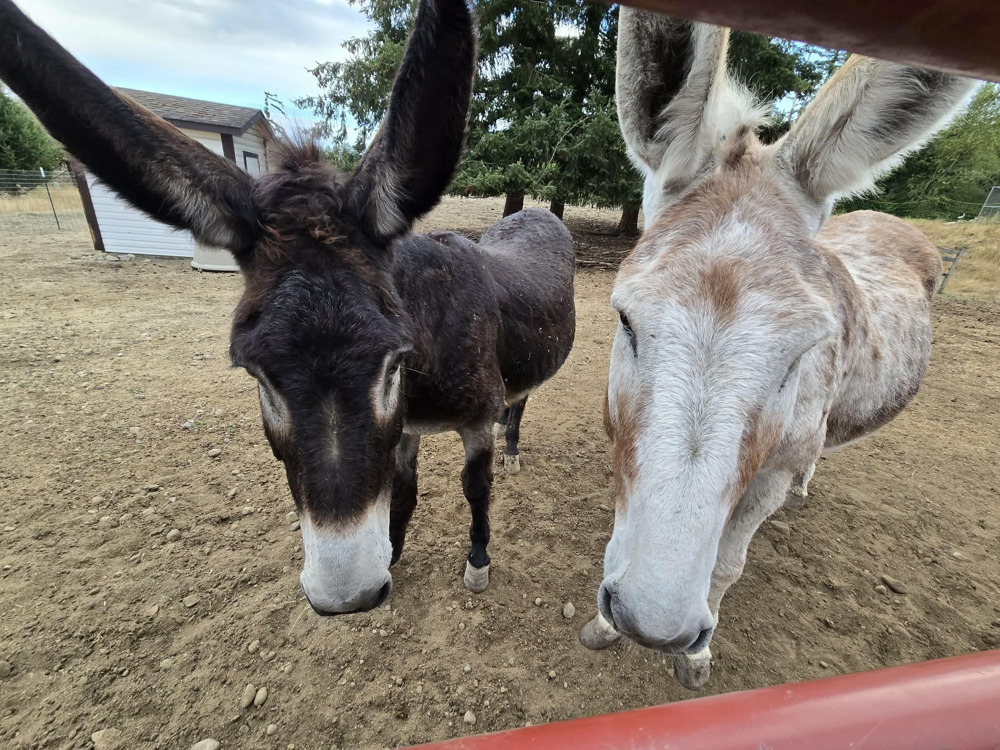

Stand Down Sanctuary and Farm
A Place to Rest, Heal and Begin Again
Experience the peace of the farm, the comfort of animal companionship, and the strength of a caring community.
A Place to Rest, Heal and Begin Again
Experience the peace of the farm, the comfort of animal companionship, and the strength of a caring community.
Stand Down Sanctuary and Farm is a peaceful place where veterans, first responders, families, and members of our community can slow down, reconnect with nature, and experience the comfort of authentic farm life.

We're excited to welcome our two newest donkeys to the sanctuary. Curious, gentle, and full of personality, they are already becoming favorites with visitors.

Your generosity helps provide feed, veterinary care, shelter improvements, and meaningful experiences for our visitors.
Visits are by appointment only.
Yelm, Washington
253-304-1771
standdownsanctuaryandfarm@gmail.com
Follow us on Facebook and Instagram for daily updates.